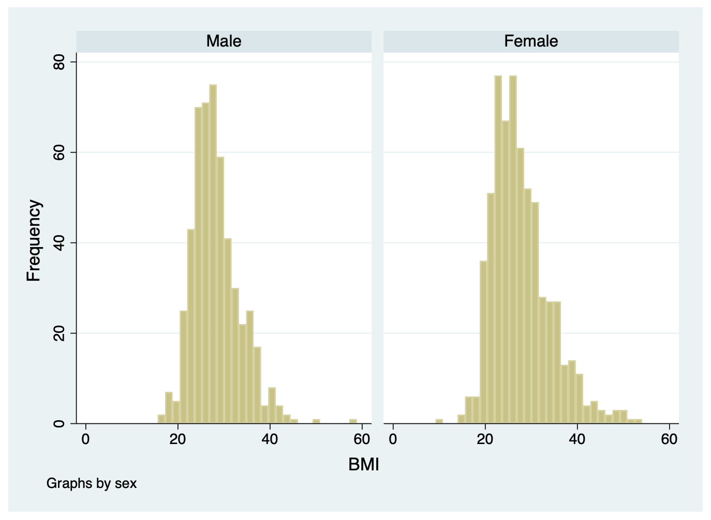
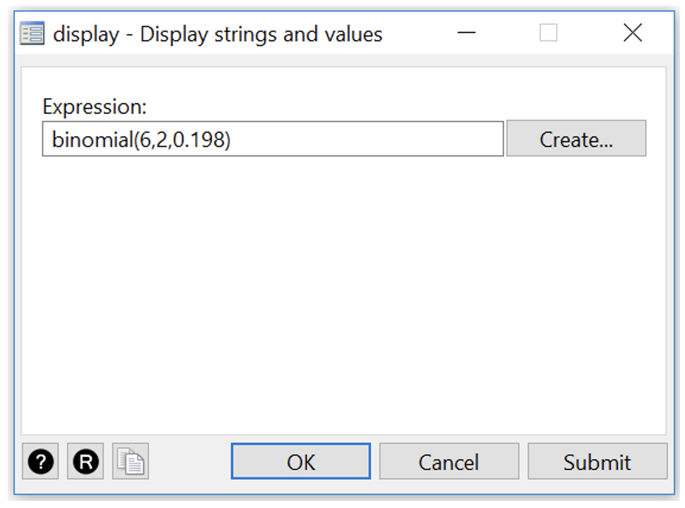

| Blood Type | % of population | Probability |
|---|---|---|
| A | 38% | 0.38 |
| B | 10% | 0.1 |
| AB | 3% | 0.03 |
| O | 49% | 0.49 |
| Total | 100% | 1 |
Learning objectives
By the end of this module you will be able to:
- Describe the concept of probability;
- Describe the characteristics of a binomial distribution and a Normal distribution;
- Compute binomial probabilities using Stata;
- Compute and use Z-scores to obtain probabilities;
- Decide when to use parametric or non-parametric statistical methods;
- Briefly outline other types of distributions.
Optional readings
Kirkwood and Sterne (2001); Chapters 5, 14 and 15. [UNSW Library Link]
Bland (2015); Chapters 6 and 7. [UNSW Library Link]
2.1 Introduction
In Module 1, we looked at how to summarise data numerically and graphically. In this module, we will introduce the concept of probability which underpins the theoretical basis of statistics, and then introduce the concept of probability distributions. We will look at the binomial distribution, and then look at the most important distribution in statistics: the Normal distribution. Finally, we introduce some other probability distributions commonly used in biostatistics.
2.2 Probability
Probability is defined as:
the chance of an event occurring, where an event is the result of an observation or experiment, or the description of some potential outcome.
Probabilities range from 0 (where the event will never occur) to 1 (where the event will always occur). For example, tossing a coin is an experiment; one event is the coin landing with head up, while the other event is the coin landing tails up. The set of all possible outcomes in an experiment is called the sample space. For example, by tossing a coin you can get either a head or a tail (called mutually exclusive events); and by rolling a die you can get any of the six sides. Thus, for a die the sampling space is: S = {1, 2, 3, 4, 5, 6}
With a fair (unbiased) die, the probability of each outcome occurring is 1/6 and its probability distribution is simply a probability of 1/6 for each of the six numbers on a die.
2.2.1 Additive law of probability
How do we work out the probability that one roll of a die will turn out to be a 3 or a 6? To do that, we first need to work out whether the events (3 or 6 on the roll of a die) are mutually exclusive. Events are mutually exclusive if they are events which cannot occur at the same time. For example, rolling a die once and getting a 3 and 6 are mutually exclusive events (you can roll one or the other but not both in a single roll).
To obtain the probability of one or the other of two mutually exclusive events occurring, the sum of the probabilities of each is taken. For example, the probability of the roll of a die being a 3 or a 6 is the sum of the probability of the die being 3 (i.e. 1/6) and the probability of the die being 6 (also 1/6). With a fair die:
Probability of a die roll being 3 or 6 = \(1/6 + 1/6 = 1/3\)
Another way of putting it is:
P(die roll =3 or die roll =6) = P(die roll=3) + P(die roll=6) = \(1/6 + 1/6 = 1/3\)
Example: Additive law for mutually exclusive events
Consider that blood type can be organised into the ABO system (blood types A, B, AB or O) An individual may only have one blood type.
Using the information from https://www.donateblood.com.au/learn/about-blood let’s consider the ABO blood type system. The frequency distribution (prevalence) of the ABO blood type system in the population represents the probability of each of the outcomes. If we consider all possible blood type outcomes, then the total of the probabilities will sum to 1 (100%).
In this example we consider: What is the probability that an individual will have either blood group O or A?
Since blood type is mutually exclusive, the probability that either one or the other occurs is the sum of the individual probabilities. These are mutually exclusive events so we can say P(O or A) = P(O) + P(A)
Thus, the answer is: P(Blood type O) + P(Blood type A) = 0.49 + 0.38 = 0.87
2.2.2 Multiplicative law of probability
The additive law of probability lets us consider the probability of different outcomes in a single experiment. The multiplicative law lets us consider the probability of multiple events occurring in a particular order. For example: if I roll a die twice, what is the probability of rolling a 3 and then a 6?
These events are independent: the probability of rolling a 6 on the second roll is not affected by the first roll.
The multiplicative law of probability states:
If A and B are independent, then P(A and B) = P(A) \(\times\) P(B).
So, the probability of rolling a 3 and then a 6 is: P(3 and 6) = \(1/6 \times 1/6 = 1/36\).
Note here that the order matters – we are considering the probability of rolling a 3 and then a 6, not the probability of rolling a 6 and then a 3.
2.3 Probability distributions
A probability distribution is a table or a function that provides the probabilities of all possible outcomes for a random event.
For example, the probability distribution for a single coin toss is straightforward: the probability of obtaining a head is 0.5, and the probability of obtaining a tail is 0.5, and this can be summarised in Table 2.2.
| Coin face | Probability |
|---|---|
| Heads | 0.5 |
| Tails | 0.5 |
Similarly, the probability distribution for a single roll of a die is straightforward: each face has a probability of 1/6 (Table 2.3).
| Face of a die | Probability |
|---|---|
| 1 | 1/6 |
| 2 | 1/6 |
| 3 | 1/6 |
| 4 | 1/6 |
| 5 | 1/6 |
| 6 | 1/6 |
Things become more complicated when we consider multiple coin-tosses, or rolls of a die. These series of events can be summarised by considering the number of times a certain outcome is observed. For example, the probability of obtaining three heads from five coin tosses.
Probability distributions can be used in two main ways:
- To calculate the probability of an event occurring. This seems trivial for the coin-toss and die-roll examples above. However, we can consider more complex events, as below.
- To understand the behaviour of a sample statistic. We will see in Modules 3 and 4 that we can assume the mean of a sample follows a probability distribution. We can obtain useful information about the sample mean by using properties of the probability distribution.
2.4 Discrete random variables and their probability distributions
Rather than thinking of random events, we often use the term random variable to describe a quantity that can have different values determined by chance.
A discrete random variable is a random variable that can take on only countable values (that is, non-negative whole numbers). An example of a discrete random variable is the number of heads observed in a series of coin tosses.
A discrete random variable can be summarised by listing all the possible values that the variable can take. As defined earlier, a table, formula or graph that presents these possible values, and their associated probabilities, is called a probability distribution.
Example: let’s consider the number of heads in a series of three coin tosses. We might observe 0 heads, or 1 head, or 2, or 3 heads. If we let X denote the number of heads in a series of three coin tosses, then possible values of X are 0, 1, 2 or 3.
We write the probability of observing x heads as P(X=x). So P(X=0) is the probability that the three tosses has no heads. Similarly, P(X=1) is the probability of observing one head.
The possible combinations for three coin tosses are as follows:
| Pattern | Number of heads |
|---|---|
| Tail, Tail, Tail | 0 |
| Head, Tail, Tail | |
| Tail, Head, Tail | 1 |
| Tail, Tail, Head | |
| Head, Head, Tail | |
| Head, Tail, Head | 2 |
| Tail, Head, Head | |
| Head, Head, Head | 3 |
There are eight possible outcomes from three coin tosses (permutations). If we assume an equal chance of observing a head or a tail, each permutation above is equally likely, and so has a probability of 1/8.
If we consider the possibility of observing just one head out of the three tosses, this can happen in three ways (HTT, THT, TTH). So the probability of observing one head is calculated using the additive law: P(X=1) = \(\tfrac{1}{8} + \tfrac{1}{8} + \tfrac{1}{8} = \tfrac{3}{8}\).
Therefore, the probability distribution for X, the number of heads from three coin tosses, is as follows:
| x (number of heads observed) | P(X=x) |
|---|---|
| 0 | 1/8 |
| 1 | 1/8 + 1/8 + 1/8 = 3/8 |
| 2 | 1/8 + 1/8 + 1/8 = 3/8 |
| 3 | 1/8 |
Note that the probabilities sum to 1.
The above example was based on a coin toss, where flipping a head or a tail is equally likely (both have probabilities of 0.5). Let’s consider a case where the probability of an event is not equal to 0.5: having blood type A.
From Table 2.1, the probability that a person has Type A blood is 0.38, and therefore, the probability that a person does not have Type A blood is 0.62 (1–0.38). If we considered taking a random sample of three people, the probability that all three would have Type A blood is 0.38 × 0.38 × 0.38 (using the multiplicative rule above) – and there is only one way this could happen.
The number of ways two people out of three could have Type A blood is 3, and each permutation is listed in Table 2.6. The probability of observing each of the three patterns is the same, and can be calculated using the multiplicative rule: 0.38 × 0.38 × 0.62 = 0.0895.
| Person 1 | Person 2 | Person 3 | Probability |
|---|---|---|---|
| A | A | A | 0.38 × 0.38 × 0.38 = 0.0549 |
| A | A | Not A | 0.38 × 0.38 × 0.62 = 0.0895 |
| A | Not A | A | 0.38 × 0.62 × 0.38 = 0.0895 |
| Not A | A | A | 0.62 × 0.38 × 0.38 = 0.0895 |
| A | Not A | Not A | 0.38 × 0.62 × 0.62 = 0.1461 |
| Not A | A | Not A | 0.62 × 0.38 × 0.62 = 0.1461 |
| Not A | Not A | A | 0.62 × 0.62 × 0.38 = 0.1461 |
| Not A | Not A | Not A | 0.62 × 0.62 × 0.62 = 0.2383 |
Table 2.7 gives the probability of each of the blood type combinations we could observe in three people. The probability of observing a certain number of people (say, k) with Type A blood from a sample of three people can be calculated by summing the combinations:
| Number of people with Type A blood | Probability of each pattern |
|---|---|
| 3 | 0.0549 |
| 2 | 0.0895 + 0.0895 + 0.0895 = 0.2689 |
| 1 | 0.1461 + 0.1461 + 0.1461 = 0.4382 |
| 0 | 0.2383 |
2.5 Binomial distribution
The above are examples of the binomial distribution. The binomial distribution is used when we have a collection of random events, where each random event is binary (e.g. Heads vs Tails, Type A blood vs Not Type A blood, Infected vs Not infected). The binomial distribution calculates (in general terms):
- the probability of observing k successes
- from a collection of n trials
- where the probability of a success in one trial is p.
The terms used here can be defined as: - a success is simply an event of interest from a binary random event. In the coin-toss example, “success” was tossing a Head. In the blood type example, we were only interested in whether someone was Type A or not Type A, so “success” was a blood of Type A. We tend to use the word “success” to mean “an event of interest”, and “failure” as “an event not of interest”. - the number of trials refers to the number of random events observed. In both examples, we observed three events (three coin tosses, three people). - the probability of a success (p) simply refers to the probability of the event of interest. In the coin toss example, this was the probability of tossing a Heads (=0.5); for the blood-type example, this was the probability of having Type A blood (0.38).
Putting all this together, we say that we have a binomial experiment. To satisfy the assumptions of a binomial distribution, our experiment must satisfy the following criteria:
- The experiment consists of fixed number (n) of trials.
- The result of each trial falls into only one of two categories – the event occurred (“success”) or the event did not occur (“failure”).
- The probability, p, of the event occurring remains constant for each trial.
- Each trial of the experiment is independent of the other trials.
We have shown in the examples above how we can calculate the probabilities for small experiments (n=3). Once n becomes large, constructing such probability distribution tables becomes difficult. The general formula for calculating the probability of observing k successes from n trials, where each trial has a probability of success of p is given by:
\[ P(X=k) = \frac{n!}{k! (n-k)!} \times p^k \times (1-p)^{n-k} \]
where \(n! = n \times (n-1) \times (n-2) \times \dots \times 2 \times 1\).
Note that this formula is almost never calculated by hand. Instructions for calculating binomial probabilities are given in the Stata and R notes at the end of this Module.
2.5.1 Mean and variance of a binomial variable
The properties of the binomial distribution are useful in the statistical modelling of prevalence data. If X has a binomial distribution, then the mean of X is:
\[ E(X) = n \times p\] and the variance is:
\[ var(X) = n \times p \times (1-p) \] where n = the number of trials, and p = the probability of the event occurring (or success).
Worked example
A population-based survey conducted by the AIHW (2008) of a random sample of the Australian population estimated that in 2007, 19.8% of the Australian population were current smokers.
- From a random sample of 6 people from the Australian population in 2007, what is the probability that 3 of them will be smokers?
- What is the probability that among the six persons, at least 4 will be smokers?
- What is the probability that at most, 2 will be smokers?
Stata Solution
- The computation for binomial probabilities can be done using Stata from the main menu Data > Other utilities > Hand calculator as shown in the Stata Notes section.
Of the three binomial functions in the Hand Calculator, we choose the binomialp function, which gives “the probability of observing k successes in n trials when the probability of a success on one trial is p”.
We complete the function using n=6, k=3, and p=0.198. This gives an answer of 0.08. [Command: display binomialp(6, 4, 0.198)]
- In common language, getting “at least 4” smokers means getting 4, 5 or 6 smokers. Since these are mutually exclusive events, we can apply the additive law to find the probability of getting at least 4 smokers:
\[ P(X \ge 4) = P(X=4) + P(X=5) + P(X=6) \] Using the same binomial probability function as in the previous question,
- P(X=4) = 0.015 [Command:
display binomialp(6, 4, 0.198)] - P(X=5) = 0.001 [Command:
display binomialp(6, 5, 0.198)] - P(X=6) = 0.00006 [Command:
display binomialp(6, 6, 0.198)]
Answer: \(P(X \ge 4) = 0.00006025 + 0.00146437 + 0.0148282 = 0.016\)
Alternatively, we can use the binomialtail function (which gives “the probability of observing k or more successes in n trials when the probability of a success on one trial is p”).
Here, n=6, k=4 and p=0.198, giving the same answer as above: 0.016. [Command: display binomialtail(6, 4, 0.198)]
- Observing at most two means observing 0, 1 or 2 smokers. Therefore, the probability of observing at most 2 smokers is:
- P(X \(\le\) 2) = P(X=0) + P(X=1) + P(X=2)
- P(X=0) = 0.266 [Command:
display binomialp(6,0,.198)] - P(X=1) = 0.394 [Command:
display binomialp(6,1,.198)] - P(X=2) = 0.243 [Command:
display binomialp(6,2,.198)]
Answer: P(X \(\le\) 2) = 0.266+0.394+0.243=0.903
This can also be done by using the binomial function (which gives “the probability of observing k or fewer successes in n trials when the probability of a success on one trial is p”).
Here, n=6, k=2 and p=0.198, giving the same answer as above: 0.904 (note the discrepancy due to rounding error above). [Command: display binomial(6, 2, 0.198)]
R Solution
The computation for binomial probabilities can be done in R using the dbinom and pbinom functions.
- Of the two binomial functions, we choose the
dbinom(x, size, prob)function, which gives the probability of observingxsuccesses insizetrials when the probability of a success on one trial isprob.
We complete the function using x=6, size=3, and prob=0.198. This gives an answer of 0.08:
dbinom(x=3, size=6, prob=0.198)[1] 0.08008454- In common language, getting “at least 4” smokers means getting 4, 5 or 6 smokers. Since these are mutually exclusive events, we can apply the additive law to find the probability of getting at least 4 smokers:
\[ P(X \ge 4) = P(X=4) + P(X=5) + P(X=6) \] Using the same binomial probability function as in the previous question,
- P(X=4) = 0.015 [Command:
dbinom(x=4, size=6, prob=0.198)] - P(X=5) = 0.001 [Command:
dbinom(x=5, size=6, prob=0.198)] - P(X=6) = 0.00006 [Command:
dbinom(x=6, size=6, prob=0.198)]
Answer: \(P(X \ge 4) = 0.0148282 + 0.00146437 + 0.00006025 = 0.016\)
Alternatively, we can use the pbinom(q, size, prob, lower.tail=FALSE) function (which gives the probability of observing more than q successes in size trials when the probability of a success on one trial is prob).
Here, q=3, size=6 and prob=0.198, giving the same answer as above: 0.016:
pbinom(q=3, size=6, prob=0.198, lower.tail=FALSE)[1] 0.01635325- Observing at most two means observing 0, 1 or 2 smokers. Therefore, the probability of observing at most 2 smokers is:
- P(X \(\le\) 2) = P(X=0) + P(X=1) + P(X=2)
- P(X=0) = 0.266 [Command:
dbinom(x=0, size=6, prob=0.198)] - P(X=1) = 0.394 [Command:
dbinom(x=1, size=6, prob=0.198)] - P(X=2) = 0.243 [Command:
dbinom(x=2, size=6, prob=0.198)]
Answer: \(P(X \le 2) = 0.266 + 0.394 + 0.243 = 0.903\)
This can also be done by using the pbinom(q, size, prob) function (which gives the probability of observing q or fewer successes in size trials when the probability of a success on one trial is prob).
Here, q=2, size=6 and p=0.198, giving the same answer as above: 0.904 (note the discrepancy due to rounding error above).
pbinom(q=2, size=6, prob=0.198)[1] 0.90356222.6 Normal distribution
The frequency plot for many biological and clinical measurements (for example blood pressure and height) follow a bell shape where the curve is symmetrical about the mean value and has tails at either end. Figure 2.1 1 and Figure 2.2 2 demonstrate this type of distribution.


The Normal distribution, also called the Gaussian distribution (named after Johann Carl Friedrich Gauss, 1777–1855), has been shown to fit the frequency distribution of many naturally occurring variables. It is characterised by its bell-shaped, symmetric curve and its tails that approach zero on either side.
There are two reasons for the importance of the Normal distribution in biostatistics (Kirkwood and Sterne, 2003). The first is that many variables can be modelled reasonably well using the Normal distribution. Even if the observed data were not Normally distributed, it can often be made reasonably Normal after applying some transformation of the data. The second (and possible most important) reason, is based on the central limit theorem and will be discussed in Module 3.
The Normal distribution is characterised by two parameters: the mean (\(\mu\)) and the standard deviation (\(\sigma\)). The mean defines where the middle of the Normal distribution is located, and the standard deviation defines how wide the tails of the distribution are.
For a Normal distribution, about 68% of the observations lie between \(- \sigma\) and \(\sigma\) of the mean; 95% of the observations lie between \(−1.96 \times \sigma\) and \(1.96 \times \sigma\) from the mean; and almost all the observations (99.7%) lie between \(-3 \times \sigma\) and \(3 \times \sigma\) (Figure 2.3). Also note that the mean is the same as the median, as the curve is symmetric about its mean.

2.7 The Standard Normal distribution
As each Normal distribution is defined by its mean and standard deviation, there are an infinite number of possible Normal distributions. However, every Normal distribution can be transformed to what we call the Standard Normal distribution, which has a mean of zero (\(\mu = 0\)) and a standard deviation of one (\(\sigma = 1\)). The Standard Normal distribution is so important that it has been assigned its own symbol: Z.
Every observation from a Normal distribution \(X\) with a mean \(\mu\) and a standard deviation \(\sigma\) can be transformed to a z-score (also called a Standard Normal deviate) by the formula:
\[ z = \frac{x - \mu}{\sigma} \]
The z-score is simply how far an observation lies from the population mean value, scaled by the population standard deviation.
We can use z-scores to estimate probabilities, as shown in Worked Example 2.2.
Worked Example
This example extends the example of diastolic blood pressure shown in Figure 2.1. Assume that the mean diastolic blood pressure for men is 77.9 mmHg, with a standard deviation of 11. What is the probability that a man selected at random will have high blood pressure (i.e. diastolic blood pressure ≥ 90)?
To estimate the probability that diastolic blood pressure ≥ 90 (i.e. the upper tail probability), we first need to calculate the z-score that corresponds to 90 mmHg.
Using the z-score formula, with x=90, \(\mu\)=77.9 and \(\sigma\)=11:
\[ z = \frac{90 - 77.9}{11} = 1.1 \] Thus, a blood pressure of 90 mmHg corresponds to a z-score of 1.1, or a value 1.1 \(\times \sigma\) above the mean weight of the population.
Using a table of Z-scores (Appendix Table 1), we find the probability that a person has a diastolic blood pressure of 90 mmHg or more as P(Z ≥ 1.1) = 0.136.
An extract from Appendix Table 1 is shown in Figure 2.4 to demonstrate how to find the probability from the look-up table.

Figure 2.5 shows the probability of a diastolic blood pressure of 90 mmHg or more in the population for a Z-score of greater than 1.1 on a Standard Normal distribution.

Apart from calculating probabilities, Z-scores are most useful for comparing measurements taken from a sample to a known population distribution. It allows measurements to be compared to one another despite being on different scales or having different predicted values.
For example, if we take a sample of children and measure their weights, it is useful to describe those weights as Z-scores from the population weight distribution for each age and gender. Such distributions from large population samples are widely available. This allows us to describe a child’s weight in terms of how much it is above or below the population average. For example, if mean weights were compared, children aged 5 years would be on average heavier than the children aged 3 years simply because they are older and therefore larger. To make a valid comparison, we could use the Z-scores to say that children aged 3 years tend to be more overweight than children aged 5 years because they have a higher mean Z-score for weight.
2.8 Assessing Normality
There are several ways to assess whether a continuous variable is Normally distributed. The simple process of plotting a histogram and boxplot and comparing estimates of the centre of the data (mean and median) provide valuable information about the way in which the data are distributed.
Other more formal measures of Normality such as skewness (whether the distribution is symmetrical or asymmetrical) and kurtosis (whether the distribution is flat or peaked) can be obtained from Stata (see Stata Notes section on Producing summary statistics in Module 1).
2.8.1 Skewness and kurtosis
Skewness is a measure of the lack of symmetry of a distribution. If the distribution is symmetric, the coefficient of skewness is 0. If the coefficient is negative, the median is usually greater than the mean and the distribution is said to be skewed left. If the coefficient is positive, the median is usually less than the mean and the distribution is said to be skewed right.
Kurtosis (from the Greek kyrtosis, meaning curvature) is a measure of peakiness of a distribution. The smaller the coefficient of kurtosis, the flatter the distribution. The Normal distribution has a coefficient of kurtosis of 3 (0 in R) and provides a convenient benchmark. If the distribution is more spread out, then the kurtosis will be greater than 3 (0 in R).
| Skewness | Interpretation |
|---|---|
| 0 | The distribution is symmetric |
| If skewness is between -0.5 and 0.5, the distribution is approximately symmetric | |
| Negative | Distribution is skewed to the left (mean is usually less than the median) – aka negative skew (longer tail to the left) |
| If it is less than −1, the distribution is highly skewed to the left | |
| If it is between −1 and −0.5, the distribution is moderately skewed to the left | |
| Positive | Distribution is skewed to the right (mean is usually greater than the median) – aka positive skew (longer tail to the right) |
| If it is greater than 1, the distribution is highly skewed to the right | |
| If it is between 1 and 0.5, the distribution is moderately skewed to the right |
For your information: There are formal tests in Stata and R that test for Normality. These tests are beyond the scope of this course and will be discussed in the Advanced course.
The histogram for our 30 weights is approximately bell-shaped and roughly symmetrical. The mean and median (50th percentile) values are identical, as would be expected for a Normal distribution. These statistics indicate that the data are Normally distributed. Finally, you can look at the histogram and boxplot (Figure 2.6) to assess symmetry and outliers at either end of the distribution.

A summary of how to explore Normality is shown in Table 2.9.
| Method | Indication of Normality |
|---|---|
| Examine histogram | Approximately bell shaped and symmetrical; may be difficult to determine if the sample size is small |
| Compare mean and median values | Values are approximately equal |
| Examine box plot | Box plot symmetrical with no outliers |
It is important to look at all these measures together, and not rely on a single measure when assessing whether a sample is approximately Normally distributed. For small samples, it can be very difficult to determine whether the data are approximately Normally distributed.
2.9 Non-Normally distributed measurements
In the above example, diastolic blood pressure was Normally distributed with an approximately bell-shaped frequency histogram. However, not all measurements are Normally distributed, and the symmetry of the bell shape may be distorted by the presence of some very small or very large values. Non-Normal distributions such as this are called skewed distributions.
When there are some very large values, the distribution is said to be positively skewed.This often occurs when measuring variables related to time, such as days of hospital stay, where most patients have short stays (say 1 - 5 days) but a few patients with serious medical conditions have very long lengths of hospital stay (say 20 - 100 days).
In practice, most parametric summary statistics are quite robust to minor deviations from Normality and non-parametric statistical methods are only required when the sample size is small and/or the data are obviously skewed with some influential outliers.
When the data are markedly skewed, histograms and boxplots can look very different. For example, data of length of hospital stay in a sample of children are shown as a histogram and as a box plot in Figure 2.7.

In the histogram of Figure 2.7, there is a tail of values to the right, so we would conclude that the distribution is skewed to the right. In the boxplot, the whiskers appear to be fairly symmetric, but there are some unusual values (denoted by dots) above the box and its whiskers. Stata defines these unusual values as being more than 1.5 times the IQR from the edge of the box.
The presence of unusual values may be an indication that the data are not Normally distributed. Both the histogram and the box plot show that the distribution has a marked tail towards high values and that non-parametric statistics should be used to generate summary statistics and analyse the data.
Note that Stata has defined points as being unusual, or outliers. Outliers can be problematic and the decision to include them or omit them from further analyses can be difficult. After detecting any outliers or extreme values, you should not automatically exclude them from the analysis, particularly if the sample was selected randomly from a population. First, it is important to check the original data collection form or questionnaire to rule out the possibility of a data entry error. If the outlier is not a data entry error, it is then important to decide whether the observation is biologically plausible and, if it is, it should be included in the analysis.
2.9.1 Which measure of central tendency to use
It is most appropriate to use the mean when the data exhibit a symmetric or bell-shaped distribution. For skewed distributions (where there are more values on the higher (negative skew) or lower side (positive skew) of the scale) the mean is not a good measure of the centre, as the calculation will be influenced by the extreme values. The median is the preferred statistic for describing central tendency in a skewed distribution.
If the data exhibits a Normal distribution, we use the standard deviation as the measure of spread. Otherwise, the interquartile range is preferred.
2.10 Parametric and non-parametric statistical methods
Many statistical methods are based on assumptions about the distribution of the variable – these methods are known as parametric statistical methods. Many methods of statistical inferences based on theoretical sampling properties that are derived from a Normal distribution with the characteristics described above. Thus, it is important that measurements approximate to a Normal distribution before these parametric methods are used. The methods are called ‘parametric’ because they are based on the parameters – the mean and standard deviation - that underlie a Normal distribution. Statistics which do not assume a particular distribution are called distribution-free statistics, or ‘non-parametric statistics’.
In this course, you will learn about both parametric and non-parametric statistical methods. Parametric summary statistical methods include those based on the mean, standard deviation and range (Module 1), and standard error and 95% confidence interval (Module 3). Parametric statistical tests also include t-tests which will be covered in Modules 4 and 5, and correlation and regression described in Module 8.
Non-parametric summary statistical methods are often based on ranks, and may use such statistics as the median, mode and inter-quartile range (Module 1). Non-parametric statistical tests that use ranking are described in Module 9.
2.11 Other types of probability distributions
In this module we have considered a Normal probability distribution and how to use it to measure the precision of continuously distributed measurements. Data also follow other types of distributions which are briefly described below. In other modules in this course, we will be looking at a range of methods to analyse health data and will refer back to these different distributions.
Normal approximation of binomial: When the sample size becomes large, it becomes cumbersome to calculate the exact probability of an event using the binomial distribution. Conveniently, with large sample sizes, the binomial distribution approximates a Normal distribution. The mean and SD of a binomial distribution can be used to calculate the probability of the event as though it was from a Normal distribution.
Poisson distribution: is another distribution which is often used in health research for modelling count data. The Poisson distribution is followed when a number of events happen in a fixed time interval. This distribution is useful for describing data such as deaths in the population in a time period. For example, the number of deaths from breast cancer in one year in women over 50 years old will be an observation from a Poisson distribution. We can also use this to make comparisons of mortality rates between populations.
Many other probability distributions can be derived for functions which arise in statistical analyses but the chi-squared, t and F distributions are the three distributions that are most widely used. These have many applications, some of which are described in later modules.
The chi-squared distribution is a skewed distribution which allows us to determine the probability of a deviation between a count that we observe and a count that we expect for categorical data. One use of this is in conducting statistical tests for categorical data. See Module 7.
A t-distribution is used when the population standard deviation is not known. The t-distribution is appropriate for small samples (<30) and its distribution is bell shaped similar to a Normal distribution but slightly flatter. The t-distribution is useful for comparing mean values. See Module 4 and Module 5.
Stata notes
2.12 Importing data into Stata
We have described previously how to open data that have been saved as Stata .dta files. It is quite common to have data saved in other file types, such as Microsoft Excel, or plain text files. In this section, we will demonstrate how to import data from other packages into Stata using commands in the File > Import menu.
2.12.1 Importing plain text data into Stata
A csv file, or a “comma separated variables” file is commonly used to store data. These files have a very simple structure: they are plain text files, where data are separated by commas. csv files have the advantage that, as they are plain text files, they can be opened by a large number of programs (such as Notepad in Windows, TextEdit in MacOS, Microsoft Excel - even Microsoft Word). While they can be opened by Microsoft Excel, they can be opened by many other programs: the csv file can be thought of as the lingua-franca of data.
In this demonstration, we will use data on the weight of 1000 people entered in a csv file called mod02_weight_1000.csv available on Moodle. To confirm that the file is readable by any text editor, here are the first ten lines of the file, opened in Notepad on Microsoft Windows, and TextEdit on MacOS.

To import it into Stata, use File > Import > Text data (delimited, .csv, …) to bring up the import delimited text data dialog box. Click the Open button (the folder icon on the right-hand side of the window) and select the csv file you downloaded. The dialog box should look like below:

Here, Stata has (correctly) decided that the first row of the dataset contains the variable names. You may need to change this if the Preview window does not look correct. Click OK or Submit button to import the data.
2.13 Checking your data for errors in Stata
Before you start describing and analysing your data, it is important to make sure that no errors have been made during the data entry process. Basically, you are looking for values that are outside the range of possible or plausible values for that variable.
If an error is found, the best method for correcting the error is to go back to the original data e.g. the hard copy questionnaire, to obtain the original value, entering the correct value into Stata. If the original data is not available or the original data is also incorrect, the erroneous value is often excluded from the dataset.
For continuous variables, the easiest methods are to examine a boxplot and histogram. For example, a boxplot and histogram for the weight variable we just imported appear as:

There is a clear outlying point shown in the boxplot. Although not obvious, the same point is shown in the histogram as a bar around 700 with a very short height.
To identify the outlying observation in the dataset, we can sort your data in ascending order and check the minimum and maximum values in the Data Editor. You will need to decide if these values are a data entry error or are biologically plausible. If an extreme value or “outlier”, is biologically plausible, it should be included in all analyses.
To sort data, you must be in the Data Editor (Edit) window. Select Data > Sort data… and choose weight as shown in the sort dialog box below. Click OK to do an ascending sort (arranging weight from smallest to largest). [Command: sort weight]
By scrolling through the data, you will see that the values range from 53.8kg to 85.8kg with a very high value of 700.2kg. A value as high as 700kg is likely to be a data entry error (e.g. error in entering an extra zero) and is not a plausible weight value. Here, you should check your original data. You might find that the original weight was recorded as 70.2kg. You can change this in Stata by deleting a zero from cell with 700.2 in the Data Editor (Edit) window.
Note: if an extreme value lies within the range of biological plausibility it should not be removed from analysis.
Once you have checked your data for errors, you are ready to start analysing your data.
2.14 Overlaying a Normal curve on a Histogram
It can be useful to produce a histogram with an overlayed Normal curve to assess whether our sample appears approximately Normally distributed. First go to menu Graphics > Histogram. In the Histogram dialog box, select weight into the variable box and choose the Frequency radio button for ease of interpretation.

You can click the Submit button to check how the plot looks like. To superimpose the normal curve, go to the Density plots and tick Add normal-density plot, then click the Submit or OK button. You can change the X-axis label in the X axis tab, e.g. to Weight (kg).

[Command: histogram weight, frequency normal xtitle(Weight (kg))]
Your histogram should look like this:

2.15 Descriptive statistics for checking normality
All the descriptive statistics including Skewness and Kurtosis discussed in this module can be obtained using the summarize command from Statistics > Summaries, tables, and tests > Summary and descriptive statistics > Summary statistics and specifying detail as an option in Stata (as shown in the Stata Notes for Module 1).
[Command: summarize weight, detail]

You can similarly repeat this using the dataset mod02_weight_30.dta used for creating these in the course notes for this module.
2.16 Importing Excel data into Stata
Another common type of file that data are stored in is a Microsoft Excel file (.xls or .xlsx). In this demonstration, we will import a selection of records from a large health survey, stored in the file mod02_health_survey.xlsx.
The health survey data contains 1140 records, comprising:
- sex: 1 = respondent identifies as male; 2 = respondent identifies as female
- height: height in meters
- weight: weight in kilograms
To import data from Microsoft Excel, we use File > Import > Excel spreadsheet. First click Browse to locate the file to be imported:

Take special note of the Preview at the bottom of the dialog box. Our dataset has the variable names listed in the first row of the spreadsheet, so we tick the Import first row as variable names checkbox. We don’t want to Import all data as strings (strings are character, or text variables), so we leave this unchecked. We finalise the process by clicking OK.
As always, check the Data Browser to confirm that the data were imported successfully.
2.17 Generating new variables
Our health survey data contains information on height and weight. We often summarise body size using BMI: body mass index which is calculated as: \(\frac{\text{weight (kg)}}{(\text{height (m)})^2}\)
To generate a new variable, we use Data > Create or change data > Create new variable.
- type the name of the new variable, BMI, in the Variable name box.
- enter the formula to calculate the variable in “Specify a value or an expression”. This can be done in one of two ways:
Option 1: click Create to open the Expression Builder dialog box. This box allows you to build the formula interactively:

Clicking Variables in the lower-left-hand pane shows a list of variables in the lower-middle pane of the window. We want to create a new formula of \(\text{weight } \div \text{ height} ^2\). Double-clicking a variable name moves that variable into the formula builder. To build our BMI formula:
- double-click
weight - click the / button (to represent \(\div\)). Note that you can type the / symbol instead of clicking the button
- double-click
height - click the ^ button (to represent “to the power of”) - again you can type the ^ symbol
- enter
2(as ^2 represents “to the power of 2”, or “squared”
Your completed window should look like:

Click OK to return to the generate dialog box, which now should appear as:

Option 2: if you are entering a simple formula, you can type the formula directly into the expression using your keyboard.
Click OK to generate your new variable.
[Command: generate BMI = weight / height ^ 2]
We should check the construction of the new variable by examining the Data Browser:

In the general population, BMI ranges between about 15 to 30. It appears that BMI has been correctly generated in this example.
2.18 Summarising data by another variable
We will often want to calculate the same summary statistics by another variable. For example, we might want to calculate summary statistics for BMI for males and females separately. We can do this in Stata by defining sex as a by-variable. Many Stata commands (and dialog boxes) allow for a by-variable. For example, to obtain summary statistics for BMI by sex (note that sex has been given a value label, as described in Module 1):
- Define
BMIas our Variable in the Statistics > Summaries, tables, and tests > Summary and descriptive statistics > Summary statistics dialog box.
- Click the by/if/in tab, tick Repeat command by groups, and select the variable you want to be the by-variable. In this case, we choose
sexand then click OK.

[Command: by sex, sort : summarize BMI]
The by-variable will tell Stata to repeat the summarize command for each distinct value of sex. Hence, your by-variable must be a discrete variable with only a relatively small number of categories.
The following results appear:
. by sex, sort : summarize BMI
-----------------------------------------------------------------------------------
-> sex = Male
Variable | Obs Mean Std. Dev. Min Max
-------------+---------------------------------------------------------
BMI | 513 28.29561 5.204975 16.47519 57.23643
-----------------------------------------------------------------------------------
-> sex = Female
Variable | Obs Mean Std. Dev. Min Max
-------------+---------------------------------------------------------
BMI | 627 27.81434 6.380523 9.209298 52.59515Here, we have calculated summary statistics separately for Males and Females. A form of the by tab appears in many Stata windows. For example, we can create separate histograms for males and females using the same two-step process:
- Define
BMIas the variable to be plotted

- Define
sexas a by-variable by completing the By tab:

This produces the following graph:

2.19 Recoding data
One task that is common in statistical computing is to recode variables. For example, we might want to group some categories of a categorical variable, or to present a continuous variable in a categorical way.
In this example, we can recode BMI into the following categories as suggested by the World Health Organisation [footnote]:
- Underweight: BMI < 18.5
- Normal weight: 18.5 \(\le\) BMI < 25
- Pre-obesity: 25 \(\le\) BMI < 30
- Obesity Class I: 30 \(\le\) BMI < 35
- Obesity Class II: 35 \(\le\) BMI < 40
- Obesity Class III: BMI \(\ge\) 40
To recode data in Stata, we use the Recode categorical variable command. It may seem odd to use a command called Recode categorical variable to recode BMI, a continuous variable, but that is just the name Stata uses for its recode command.
- Click Data > Create or change data > Other variable-transformation commands > Recode categorical variable to open the recode dialog box.
- Choose
BMIas the variable to be recoded from. - Enter the recoding rules. To recode from a range of values to a new category while assigning a value label, we enter the recoding rule in the following form:
(a / b = c “label”) where:
- a is the lower limit of the range to be recoded from
- b is the upper limit of the range to be recoded from
- c is the value of the new category to be recoded to
- label is the label to assign to the category c
It is important to note that the values of a and b are inclusive; and we can use the words min and max to represent the smallest and largest values respectively.
So to recode the underweight category, we would enter: (min / 18.4999 = 1 "Underweight") Similarly, for the normal weight category, we would enter: (18.5 / 24.9999 = 2 "Normal weight")
Your completed recode dialog box should look as follows:
- Do not forget this step! To recode into a new variable, we must click the options tab to give the name of the new variable. If this step is not performed, Stata will overwrite the initial variable with the recoded version. Here, we tell Stata to generate a new variable called bmi_category:

Click OK to complete the recoding.
Note that the default label for the new recoded variable bmi_category is RECODE of BMI. This can be relabelled in the usual way: click on bmi_category in the Variables window, then enter a name such as BMI Category in the Label box in the Properties window.
2.20 Computing binomial probabilities using the Hand calculator in Stata
There are three Stata functions that we can use to calculate probabilities based on the binomial distribution: binomialp, binomial and binomialtail. Stata provides a description of the function in the Expression Builder, summarised below.
| Function | Description | Example |
|---|---|---|
| binomialp(n,k,p) | The probability of observing k successes in n trials when the probability of a success on one trial is p | Probability of observing 3 smokers from 6 people |
| binomial(n,k,p) | The probability of observing k or fewer successes in n trials when the probability of a success on one trial is p | Probability of observing 2 or fewer smokers from 6 people |
| binomialtail(n,k,p) | The probability of observing k or more successes in n trials when the probability of a success on one trial is p | Probability of observing 4 or more smokers from 6 people |
To do the computation for part (a) in Worked Example 2.1, go to Data > Other utilities > Hand calculator from the main menu in Stata.

In the dialog box, click Create… to bring up the Expression Builder dialog box. In the Categories box, click on Functions to expand the list, then scroll down to Statistical, expand the list again and select Binomial.
A list of functions will pop up to the right of the Categories box. Double click on binomialp() which will populate the top of the expression builder box with binomialp(n,k,p). Following the instructions at the bottom of the box:
- k is the number of successes, here, the number of smokers (i.e. k=3);
- n is the number of trials (i.e. n=6);
- and p is probability of drawing a smoker from the population, which is 19.8% (i.e. p=0.198).
Replace each of these with the appropriate number into the box as shown below.
Click the OK button in the Expression Builder box, then click OK or Submit in the main dialog box. The probability is now displayed on your Results screen as .08008454 which rounds off to 0.08 as shown in part (a) of Worked Example 2.1. (Note that Stata doesn’t print the 0 in front of the decimal point in the output.)
[Command: display binomialp(6, 3, 0.198)]
To calculate the upper tail of probability in part (b), go to Data > Other utilities > Hand calculator from the main menu and bring up the Expression Builder box again. You may need to clear the text in your Expression box from your previous display command.
In the Categories box, navigate to Binomial and select it as you had before. Now double click on binomialtail() which will populate the top of the expression builder box with binomialtail(n,k,p). To obtain P(X \(\ge\) 4) from 6 trials, n=6, k=4 and p=0.198. When you are done, click the OK button in the Expression Builder box to get the below in the display dialog box:

Click OK or Submit when you are done. [Command: display binomialtail(6, 4, 0.198)]
For the lower tail for part (c), choose or double-click on binomial() from the list of functions. To obtain P(X \(\le\) 2) from 6 trials, enter n=6, k=2 and p=0.198.

Click OK or Submit when you are done. [Command: display binomial(6, 2, 0.198)]
2.21 Computing probabilities from the normal distribution using the Hand calculator in Stata
From Stata, the probability using a normal distribution can be obtained from the display command via Data > Other utilities > Hand calculator as shown in Worked example 2.1. In the dialog box, click the Create… button to bring up the Expression Builder dialog box. In the Categories box, click on Functions to expand the list, then scroll down to Statistical and expand the list again and select Normal this time. Double-click on normal() to populate the top of the expression builder box with normal(z).
The instructions at the bottom of the box explain that this is the cumulative standard normal distribution which means it gives P(Z<z) in Stata. In other words, the normal() function gives you the lower tail probability from the standard normal distribution. To obtain P(Z>0.5), edit the box to 1-normal(0.5) as shown below.

Click OK, then Submit to obtain the same value as from the table. [Command: display 1-normal(0.5)]
R notes
2.22 Importing data into R
We have described previously how to import data that have been saved as R .rds files. It is quite common to have data saved in other file types, such as Microsoft Excel, or plain text files. In this section, we will demonstrate how to import data from other packages into R.
There are two useful packages for importing data into R: haven (for data that have been saved by Stata, SAS or SPSS) and readxl (for data saved by Microsoft Excel). Additionally, the labelled package is useful in working with data that have been labelled in Stata.
2.22.1 Importing plain text data into R
A csv file, or a “comma separated variables” file is commonly used to store data. These files have a very simple structure: they are plain text files, where data are separated by commas. csv files have the advantage that, as they are plain text files, they can be opened by a large number of programs (such as Notepad in Windows, TextEdit in MacOS, Microsoft Excel - even Microsoft Word). While they can be opened by Microsoft Excel, they can be opened by many other programs: the csv file can be thought of as the lingua-franca of data.
In this demonstration, we will use data on the weight of 1000 people entered in a csv file called mod02_weight_1000.csv available on Moodle.
To confirm that the file is readable by any text editor, here are the first ten lines of the file, opened in Notepad on Microsoft Windows, and TextEdit on MacOS.

We can use the read.csv function:
sample <- read.csv("data/examples/mod02_weight_1000.csv")Here, the read.csv function has the default that the first row of the dataset contains the variable names. If your data do not have column names, you can use header=FALSE in the function.
Note: there is an alternative function read_csv which is part of the readr package (a component of the tidyverse). Some would argue that the read_csv function is more appropriate to use because of an issue known as strings.as.factors. The strings.as.factors default was removed in R Version 4.0.0, so it is less important which of the two functions you use to import a .csv file. More information about this issue can be found here and here.
2.23 Checking your data for errors in R
Before you start describing and analysing your data, it is important to make sure that no errors have been made during the data entry process. Basically, you are looking for values that are outside the range of possible or plausible values for that variable.
If an error is found, the best method for correcting the error is to go back to the original data e.g. the hard copy questionnaire, to obtain the original value, entering the correct value into R If the original data is not available or the original data is also incorrect, the erroneous value is often excluded from the dataset.
For continuous variables, the easiest methods are to examine a boxplot and histogram. For example, a boxplot and histogram for the weight variable we just imported appear as:
hist(sample$weight, xlab="Weight (kg)", main="Histogram of 1000 weights")boxplot(sample$weight, xlab="Weight (kg)", main="Boxplot of 1000 weights")
There is a clear outlying point shown in the boxplot. Although not obvious, the same point is shown in the histogram as a bar around 700 with a very short height.
We can identify any outlying observations in the dataset using the subset function. You will need to decide if these values are a data entry error or are biologically plausible. If an extreme value or “outlier”, is biologically plausible, it should be included in all analyses.
For example, to list any observations from the sample dataset with a weight larger than 200:
subset(sample, weight>200)| id | weight |
|---|---|
| 58 | 700 |
We see that there is a very high value of 700.2kg. A value as high as 700kg is likely to be a data entry error (e.g. error in entering an extra zero) and is not a plausible weight value. Here, you should check your original data.
You might find that the original weight was recorded in medical records as 70.2kg. You can change this in R by writing code.
Note: many statistical packages will allow you to view a spreadsheet version of your data and edit values in that spreadsheet. This is not best practice, as corrected observations may revert to their original values depending on whether the edited data have been saved or not. By using code-based recoding, the changes will be reproduced the next time the code is run.
We will use an ifelse statement to recode the incorrect weight of 700.2kg into 70.2kg. The form of the ifelse statement is as follows:
ifelse(test, value_if_true, value_if_false)
Our code will create a new column (called weight_clean) in the sample dataframe. We will test whether weight is equal to 700.2; if this is true, we will assign weight_clean to be 70.2, otherwise weight_clean will equal the value of weight.
Putting it all together:
sample$weight_clean = ifelse(sample$weight==700.2, 70.2, sample$weight)Note: if an extreme value lies within the range of biological plausibility it should not be removed from analysis.
Once you have checked your data for errors, you are ready to start analysing your data.
2.23.1 What on earth: == ?
In R, the test of equality is denoted by two equal signs: ==. So we would use == to test whether an observation is equal to a certain value. Let’s see an example:
# Test whether 6 is equal to 6
6 == 6[1] TRUE# Test whether 6 is equal to 42
6 == 42[1] FALSEYou can read the == as “is equal to”. So the code sample$weight == 700.2 is read as: “is the value of weight from the data frame sample equal to 700.2?”. In our ifelse statement above, if this condition is true, we replace weight by 70.2; if it is false, we leave weight as is.
2.24 Overlaying a Normal curve on a histogram
It can be useful to produce a histogram with an overlayed Normal curve to assess whether our sample appears approximately Normally distributed. We can do this by plotting a histogram using the hist() function. As we’re overlaying a probability distribution, we request the histogram be plotted on a probability scale, rather than a frequency scale, using probability=TRUE.
We then request a curve be overlayed using the curve() function:
the curve should be based on the Normal distribution (
dnorm);with a mean equal to the mean of the cleaned weight:
mean(sample$weight_clean));and a standard deviation equal to the standard deviation of the cleaned weight:
sd(sample$weight_clean))
using a dark-blue colour;
and added to the previous histogram (rather than plotting the curve by itself):
add=TRUE
hist(sample$weight_clean,
xlab="Weight (kg)",
main="Histogram of 1000 weights",
probability = TRUE)
curve(dnorm(x,
mean=mean(sample$weight_clean),
sd=sd(sample$weight_clean)),
col="darkblue",
add=TRUE)
Notice that the top of the curve is chopped off. We can plot the whole curve by extending the y-axis of the histogram to 0.1:
hist(sample$weight_clean,
xlab="Weight (kg)",
main="Histogram of 1000 weights",
probability = TRUE,
ylim=c(0,0.1))
curve(dnorm(x,
mean=mean(sample$weight_clean),
sd=sd(sample$weight_clean)),
col="darkblue",
add=TRUE)
2.25 Descriptive statistics for checking normality
All the descriptive statistics including skewness and kurtosis discussed in this module can be obtained using the descriptives function from the jmv package. In particular, skewness and kurtosis can be requested in addition to the default statistics by including: skew=TRUE, kurt=TRUE:
library(jmv)
descriptives(data=sample, vars=weight_clean, skew=TRUE, kurt=TRUE)
DESCRIPTIVES
Descriptives
───────────────────────────────────────
weight_clean
───────────────────────────────────────
N 1000
Missing 0
Mean 69.76450
Median 69.80000
Standard deviation 5.052676
Minimum 53.80000
Maximum 85.80000
Skewness 0.07360659
Std. error skewness 0.07734382
Kurtosis 0.05418774
Std. error kurtosis 0.1545343
─────────────────────────────────────── 2.26 Importing Excel data into R
Another common type of file that data are stored in is a Microsoft Excel file (.xls or .xlsx). In this demonstration, we will import a selection of records from a large health survey, stored in the file mod02_health_survey.xlsx.
The health survey data contains 1140 records, comprising:
- sex: 1 = respondent identifies as male; 2 = respondent identifies as female
- height: height in meters
- weight: weight in kilograms
To import data from Microsoft Excel, we can use the read_excel() function in the readxl package.
library(readxl)
survey <- read_excel("data/examples/mod02_health_survey.xlsx")
summary(survey) sex height weight
Min. :1.00 Min. :1.220 Min. : 22.70
1st Qu.:1.00 1st Qu.:1.630 1st Qu.: 68.00
Median :2.00 Median :1.700 Median : 79.40
Mean :1.55 Mean :1.698 Mean : 81.19
3rd Qu.:2.00 3rd Qu.:1.780 3rd Qu.: 90.70
Max. :2.00 Max. :2.010 Max. :213.20 We can see that sex has been entered as a numeric variable. We should transform it into a factor so that we can assign labels to each category:
survey$sex <- factor(survey$sex, level=c(1,2), labels=c("Male", "Female"))
summary(survey$sex) Male Female
513 627 We also note that height looks like it has been entered as meters, and weight as kilograms.
2.27 Generating new variables
Our health survey data contains information on height and weight. We often summarise body size using BMI: body mass index which is calculated as: \(\frac{\text{weight (kg)}}{(\text{height (m)})^2}\)
We can create a new column in our data frame in many ways, such as using the following approach:
dataframe$new_column <- <formula>
For example:
survey$bmi <- survey$weight / (survey$height^2)We should check the construction of the new variable by examining some records. The head() and tail() functions list the first and last 6 records in any dataset. We can also examine a histogram and boxplot:
head(survey)| sex | height | weight | bmi |
|---|---|---|---|
| Male | 1.63 | 81.7 | 30.8 |
| Male | 1.63 | 68 | 25.6 |
| Male | 1.85 | 97.1 | 28.4 |
| Male | 1.78 | 89.8 | 28.3 |
| Male | 1.73 | 70.3 | 23.5 |
| Female | 1.57 | 85.7 | 34.8 |
tail(survey)| sex | height | weight | bmi |
|---|---|---|---|
| Female | 1.65 | 95.7 | 35.2 |
| Male | 1.8 | 79.4 | 24.5 |
| Female | 1.73 | 83 | 27.7 |
| Female | 1.57 | 61.2 | 24.8 |
| Male | 1.7 | 73 | 25.3 |
| Female | 1.55 | 91.2 | 38 |
hist(survey$bmi)
boxplot(survey$bmi)
In the general population, BMI ranges between about 15 to 30. It appears that BMI has been correctly generated in this example. We should investigate the very low and some of the very high values of BMI, but this will be left for another time.
2.28 Summarising data by another variable
We will often want to calculate the same summary statistics by another variable. For example, we might want to calculate summary statistics for BMI for males and females separately. We can do this in in the descriptives function by defining sex as a splitBy variable:
library(jmv)
descriptives(data=survey, vars=bmi, splitBy = sex)
DESCRIPTIVES
Descriptives
────────────────────────────────────────────
sex bmi
────────────────────────────────────────────
N Male 513
Female 627
Missing Male 0
Female 0
Mean Male 28.29561
Female 27.81434
Median Male 27.39592
Female 26.66667
Standard deviation Male 5.204975
Female 6.380523
Minimum Male 16.47519
Female 9.209299
Maximum Male 57.23644
Female 52.59516
──────────────────────────────────────────── 2.29 Summarising a single column of data
In Module 1, we started with a very simple analysis: reading in six ages, and them using summary() to calculate descriptive statistics. We then went on to use the decriptives() function in the jmv package as more flexible way of calculating descriptive statistics. Let’s revisit this analysis:
# Author: Timothy Dobbins
# Date: 5 April 2022
# Purpose: My first R script
library(jmv)
age <- c(20, 25, 23, 29, 21, 27)
# Use "summary" to obtain descriptive statistics
summary(age) Min. 1st Qu. Median Mean 3rd Qu. Max.
20.00 21.50 24.00 24.17 26.50 29.00 # Use the "descriptives" function from jmv to obtain descriptive statistics
descriptives(age)Error: Argument 'data' must be a data frameThe summary() function has worked correctly, but the descriptives() function has given an error: Error: Argument 'data' must be a data frame. What on earth is going on here?
The error gives us a clue here - the descriptives() function requires a data frame for analysis. We have provided the object age: a vector. As we saw in ?sec-data-structures, a vector is a single column of data, while a data frame is a collection of columns.
In order to summarise a vector using the descriptives() function, we must first convert the vector into a data frame using as.data.frame(). For example:
# Author: Timothy Dobbins
# Date: 5 April 2022
# Purpose: My first R script
library(jmv)
age <- c(20, 25, 23, 29, 21, 27)
# Use "summary" to obtain descriptive statistics
summary(age) Min. 1st Qu. Median Mean 3rd Qu. Max.
20.00 21.50 24.00 24.17 26.50 29.00 # Create a new data frame from the vector age:
age_df <- as.data.frame(age)
# Use "descriptives" to obtain descriptive statistics for age_df
descriptives(age_df)
DESCRIPTIVES
Descriptives
──────────────────────────────────
age
──────────────────────────────────
N 6
Missing 0
Mean 24.16667
Median 24.00000
Standard deviation 3.488075
Minimum 20.00000
Maximum 29.00000
────────────────────────────────── 2.30 Plotting data by another variable
Unfortunately, it is not straight-forward to create separate plots for every level of another variable. We will demonstrate by plotting BMI by sex using our health survey data.
The following steps are not the most efficient way of doing this, but are easy to follow and understand. We first begin by creating two new data frames, for males and females separately, using the subset() function:
survey_males <- subset(survey, sex=="Male")
survey_females <- subset(survey, sex=="Female")Note that we use the label for sex, not the underlying numeric value, as sex is a factor.
We can now create hisotgrams and boxplots of BMI for males and females separately. To place the graphs next to each other in a single figure, we can use the par function, which sets the graphics parameters. Essentially, we want to tell R to split a plot window into a matrix with nr rows and nc columns, and we fill the cells by rows (mfrow) or columns (mfcols).
For example, to plot four figures in a single plot, filled by rows, we use par(mfrow=c(2,2)).
When we are done plotting multiple graphs, we can reset the graphics parameters by submitting par(mfrow=c(1,1)).
# Set the graphics parameters to plot 2 rows and 2 columns:
par(mfrow=c(2,2))
# Specify each plot separately
hist(survey_males$bmi, xlab="BMI (kg/m2)", main="Males")
hist(survey_females$bmi, xlab="BMI (kg/m2)", main="Females")
boxplot(survey_males$bmi, ylab="BMI (kg/m2)", main="Males")
boxplot(survey_females$bmi, ylab="BMI (kg/m2)", main="Females")
# Reset graphics parameters
par(mfrow=c(1,1))2.31 Recoding data
One task that is common in statistical computing is to recode variables. For example, we might want to group some categories of a categorical variable, or to present a continuous variable in a categorical way.
In this example, we can recode BMI into the following categories as suggested by the World Health Organisation [footnote]:
- Underweight: BMI < 18.5
- Normal weight: 18.5 \(\le\) BMI < 25
- Pre-obesity: 25 \(\le\) BMI < 30
- Obesity Class I: 30 \(\le\) BMI < 35
- Obesity Class II: 35 \(\le\) BMI < 40
- Obesity Class III: BMI \(\ge\) 40
The quickest way to recode a continuous variable into categories is to use the cut command which takes a continuous variable, and “cuts” it into groups based on the specified “cutpoints”
survey$bmi_cat <- cut(survey$bmi,
breaks = c(0, 18.5, 25, 30, 35, 40, 100))Notice that lower (BMI=0) and upper (BMI=100) bounds have been specified, as both a lower and upper limit must be defined for each group.
If we examine the new bmi_cat variable:
summary(survey$bmi_cat) (0,18.5] (18.5,25] (25,30] (30,35] (35,40] (40,100]
18 362 411 205 97 47 we see that each group has been labelled (a, b]. This notation is equivalent to: greater than a, and less than or equal to b. The cut function excludes the lower limit, but includes the upper limit. Our BMI ranges have been defined to include the lower limit, and exclude the upper limit (for example, greater than or equal to 30 and less than 35).
We can specify this recoding using the right=FALSE option:
survey$bmi_cat <- cut(survey$bmi,
breaks = c(0, 18.5, 25, 30, 35, 40, 100),
right=FALSE)
summary(survey$bmi_cat) [0,18.5) [18.5,25) [25,30) [30,35) [35,40) [40,100)
18 362 411 201 101 47 Finally, we can specify labels for the groups using the labels option:
survey$bmi_cat <- cut(survey$bmi,
breaks = c(0, 18.5, 25, 30, 35, 40, 100),
right=FALSE,
labels = c("Underweight", "Normal", "Pre-obesity",
"Obesity Class I", "Obesity Class II",
"Obesity Class III"))
summary(survey$bmi_cat) Underweight Normal Pre-obesity Obesity Class I
18 362 411 201
Obesity Class II Obesity Class III
101 47 2.32 Computing binomial probabilities using R
There are two R functions that we can use to calculate probabilities based on the binomial distribution: dbinom and pbinom:
dbinom(x, size, prob)gives the probability of obtainingxsuccesses fromsizetrials when the probability of a success on one trial isprob;pbinom(q, size, prob)gives the probability of obtainingqor fewer successes fromsizetrials when the probability of a success on one trial isprob;pbinom(q, size, prob, lower.tail=FALSE)gives the probability of obtaining more thanqsuccesses fromsizetrials when the probability of a success on one trial isprob.
To do the computation for part (a) in Worked Example 2.1, we will use the dbinom function with:
- x is the number of successes, here, the number of smokers (i.e. k=3);
- size is the number of trials (i.e. n=6);
- and prob is probability of drawing a smoker from the population, which is 19.8% (i.e. p=0.198).
Replace each of these with the appropriate number into the formula:
dbinom(x=3, size=6, prob=0.198)[1] 0.08008454To calculate the upper tail of probability in part (b), we use the pbinom(lower.tail=FALSE) function. Note that the pbinom(lower.tail=FALSE) function does not include q, so to obtain 4 or more successes, we need to enter q=3:
pbinom(q=3, size=6, prob=0.198, lower.tail=FALSE)[1] 0.01635325For the lower tail for part (c), we use the pbinom function:
pbinom(q=2, size=6, prob=0.198)[1] 0.90356222.33 Computing probabilities from a Normal distribution
We can use the pnorm function to calculate probabilities from a Normal distribution:
pnorm(q, mean, sd)calculates the probability of observing a value ofqor less, from a Normal distribution with a mean ofmeanand a standard deviation ofsd. Note that ifmeanandsdare not entered, they are assumed to be 0 and 1 respectively (i.e. a standard normal distribution.)pnorm(q, mean, sd, lower.tail=FALSE)calculates the probability of observing a value of more thanq, from a Normal distribution with a mean ofmeanand a standard deviation ofsd.
To obtain the probability of obtaining 0.5 or greater from a standard normal distribution:
pnorm(0.5, lower.tail=FALSE)[1] 0.3085375To calculate the worked example: Assume that the mean diastolic blood pressure for men is 77.9 mmHg, with a standard deviation of 11. What is the probability that a man selected at random will have high blood pressure (i.e. diastolic blood pressure greater than or equal to 90)?
pnorm(90, mean=77.9, sd=11, lower.tail=FALSE)[1] 0.1356661Activities
Activity 2.1
In a Randomised Controlled Trial, the preference of a new drug was tested against an established drug by giving both drugs to each of 90 people. Assume that the two drugs are equally preferred, that is, the probability that a patient prefers either of the drugs is equal (50%). Use one of the binomial functions in Stata or R to compute the probability that 60 or more patients would prefer the new drug. In completing this question, determine:
- The number of trials (
nfor Stata,sizefor R) - The number of successes we are interested in (
kfor Stata,xorqfor R) - The probability of success for each trial (
pfor Stata,probfor R) - The form of the binomial function
- for Stata:
binomialp,binomialorbinomialtail; - for R:
dbinom,pbinomorpbinom(lower.tail=FALSE)
- for Stata:
- The final probability.
Activity 2.2
A case of Schistosomiasis is identified by the detection of schistosome ova in a faecal sample. In patients with a low level of infection, a field technique of faecal examination has a probability of 0.35 of detecting ova in any one faecal sample. If five samples are routinely examined for each patient, use Stata or R to compute the probability that a patient with a low level of infection:
- Will not be identified?
- Will be identified in two of the samples?
- Will be identified in all the samples?
- Will be identified in at most 3 of the samples?
Activity 2.3
If weights of men are Normally distributed with a population mean \(\mu\) = 87, and a population standard deviation, \(\sigma\) = 8 kg:
- What is the probability that a man will weigh 95 kg or more? Draw a Normal curve of the area represented by this probability in the population (i.e. with \(\mu\) = 87 kg and \(\sigma\) = 8 kg).
- What is the probability that a man will weigh more than 75 kg but less than 95 kg? Draw the area represented by this probability on a Normal curve.
Activity 2.4
Using the health survey data (Activity_S2.4.xlsx) described in the computing notes of this module, create a new variable, BMI, which is equal to a person’s weight (in kg) divided by their height (in metres) squared (i.e. \(\text{BMI} = \frac{\text{weight (kg)}}{\text{[height (m)]}^2}\). Categorise BMI using the WHO categories:
- Underweight: BMI < 18.5
- Normal weight: 18.5 \(\le\) BMI < 25
- Pre-obesity: 25 \(\le\) BMI < 30
- Obesity Class I: 30 \(\le\) BMI < 35
- Obesity Class II: 35 \(\le\) BMI < 40
- Obesity Class III: BMI \(\ge\) 40
Create a two-way table to display the distribution of BMI categories by sex (sex: 1 = respondent identifies as male; 2 = respondent identifies as female). Does there appear to be a difference in categorised BMI between males and females?
Activity 2.5
The data in the files Activity_S2.5.dta and Activity_S2.5.rds (available on Moodle) has information about birth weight and length of stay collected from 117 babies admitted consecutively to a hospital for surgery. For each variable:
Create a histogram to inspect the distribution of the variable;
Complete the following summary statistics for each variable:
- mean and median;
- standard deviation and interquartile range;
- skewness and kurtosis.
Make a decision about whether each variable is symmetric or not, and which measure of central tendency and variability should be reported.
Activity 2.6
The data set of hospital stay data for 1323 hypothetical patients is available on Moodle in csv format (Activity2.6.csv). Import this dataset into Stata or R. There are two variables in this dataset:
- female: female=1; male=0
- los: length of stay in days
- Use Stata or R to examine the distribution of length of stay: overall; and separately for females and males. Comment on the distributions.
- Use Stata or R to calculate measures of central tendency for hospital stay to obtain information about the average duration of hospital stay. Which summary statistics should you report and why? Report the appropriate statistics of the spread and measure of central tendency chosen.
- Calculate the measures of central tendency for hospital duration separately for males and females. What can you conclude from comparing these measures for males and females?